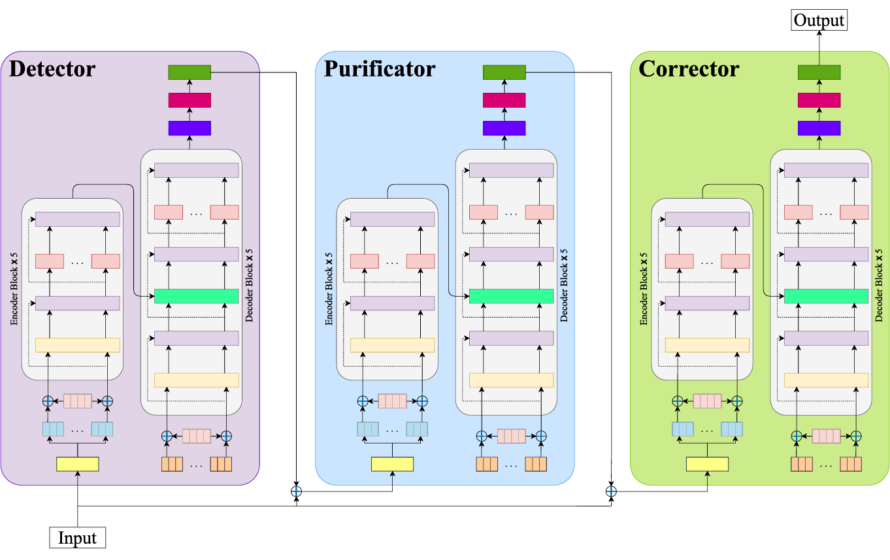
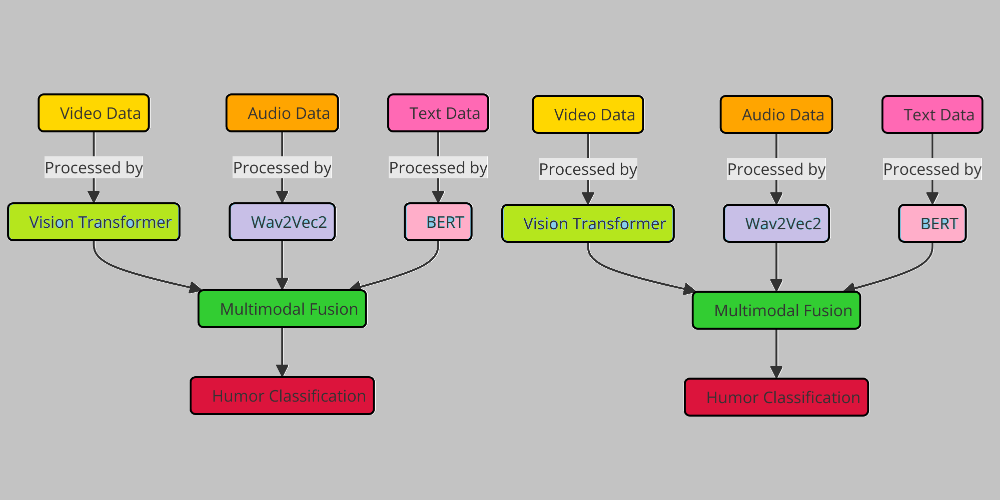

|
I am a Research Assistant 🕵 at AaltoASR research group and am pursuing my MSc at Aalto University, specializing in Speech and Language Processing. Prior to this, I earned my BSc in Computer Science and Engineering with Summa Cum Laude distinction from NSU. I worked as a lecturer at BUBT, as a research assistant at IAR-UIU, and as a teaching assistant followed by a lab instructor at NSU. My ongoing research includes Accented English Speech Recognition I also enjoy playing cricket 🥎\|/🏏, cooking 🧑🍳𓏲*ੈ‧˚🥣 without following a recipe, and walking 🌳🚶🏻➡️🌴 in the forest. Email / CV / LinkedIn / Google Scholar / GitHub |

|
- (January 2025): A first-authored journal article was published in Computer Speech & Language 🎉.
- (August 2024): A first-authored paper was published in ACMM 2024 / MuSe 2024 🎉.
- (July 2024): Our team (AaltoASR) placed 3rd in both shared tasks at ACMM 2024 / MuSe 2024 🥉🏆.
- (April 2024): A first-authored journal article was published in Neural Computing and Applications 🎉.
- (March 2024): Joined the Automatic Speech Recognition research group as a Research Assistant 🕵.
- (February 2024): A first-authored journal article was published in IEEE Access 🎉.
- (December 2023): A first-authored paper was accepted at EMNLP 2023 / BLP 2023 🎉.
- (October 2023): Started an MSc in Speech and Language Processing at Aalto University 👨💻.
- (September 2023): Served as a Reviewer 🕵️♂️ for the BLP workshop at EMNLP 2023.
- (January 2023): Joined Bangladesh University of Business and Technology as a Lecturer 👨🏫.
|
Please refer to my Google Scholar page for a complete list of publications. |
|  |
Mehedi Hasan Bijoy, Nahid Hossain, Salekul Islam, Swakkhar Shatabda Computer Speech & Language, Volume: 89, Page: 101703 Code / Paper |

|
Nahid Hossain†, Mehedi Hasan Bijoy†, Salekul Islam, Swakkhar Shatabda Neural Computing and Applications, Volume: 36, Issue: 7, Pages: 3463-3477 Code / Paper |
|  |
Mehedi Hasan Bijoy†, Dejan Porjazovski†, Nhan Phan†, Guangpu Huang†, Tamás Grósz, Mikko Kurimo ACM Multimedia 2024, Proceedings of the 5th on Multimodal Sentiment Analysis Challenge and Workshop: Social Perception and Humor Code / Paper |
|
|
|
Research Assistant
AaltoASR, Aalto University Mar 2024 - Aug 2025 Topics: • Accented English Speech Recognition (Master's Thesis). • Multilingual Speech Emotion Recognition. • Multimodal Humor Detection. |
|

|
Lecturer Department of CSE, Bangladesh University of Business and Technology Jan 23 - Oct 23 Courses: • CSE103 - Discrete Mathematics • CSE111 - Structured Programming Language • CSE121 & CSE122 - Object Oriented Programming Language & Lab • CSE231 & CSE232 - Data Structures & Lab • CSE467 - Pattern Recognition |

|
Research Assistant Institute for Advanced Research, United International University Mar 22 - Jul 23 Project: Development of Deep Learning Based Bangla Spell & Grammar Checker Outcomes: Co-authored 3 peer-reviewed publications: 2 Q1 journal articles and 1 Tier-1 conference paper. |

|
Lab Instructor Department of Electrical & Computer Engineering, North South University Feb 22 - Jan 23 Courses: • CSE115L - Programming Language I Lab • CSE225L - Data Structures and Algorithms Lab |
|
|
|
• Tutor, Aalto University, Courses: Speech Recognition (Autumn24) | Statistical Natural Language Processing (Spring25).
• Reviewer, Bangla Language Processing workshop at EMNLP 2023 • Teaching Assistant, North South University, Course: Probability & Statistics (Fall 20, Spring 21, Summer 21). |
|
|
|
Aalto University CGPA: 4.83 / 5.00 Major: Speech and Language Technology Minor: Machine Learning, Data Science and Artificial Intelligence Awards & Scholarship: • Finland Scholarship. • Master’s Degree with Honours. |
|

|
North South University CGPA: 3.81 / 4.00 Speciallization: Artificial Intelligence Awards & Scholarship: • Graduated with Summa Cum Laude distinction. • Partial tuition fee waiver grant for undergraduate studies at North South University. |
|
Modified the template open-sourced by Jon Barron. |